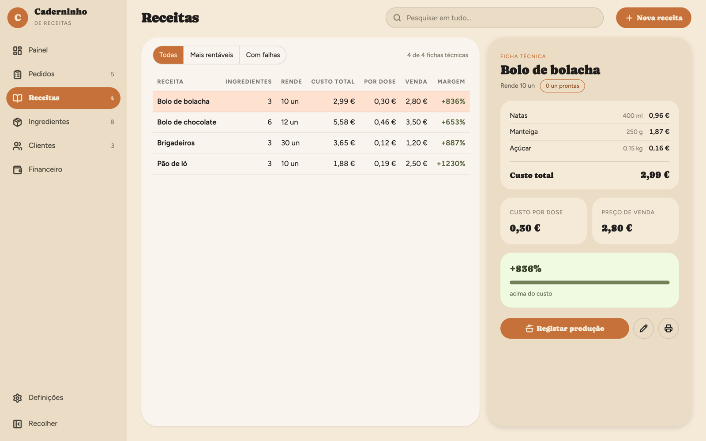
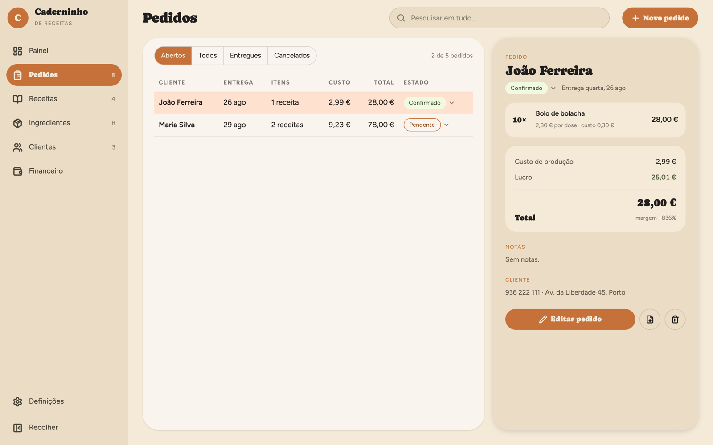
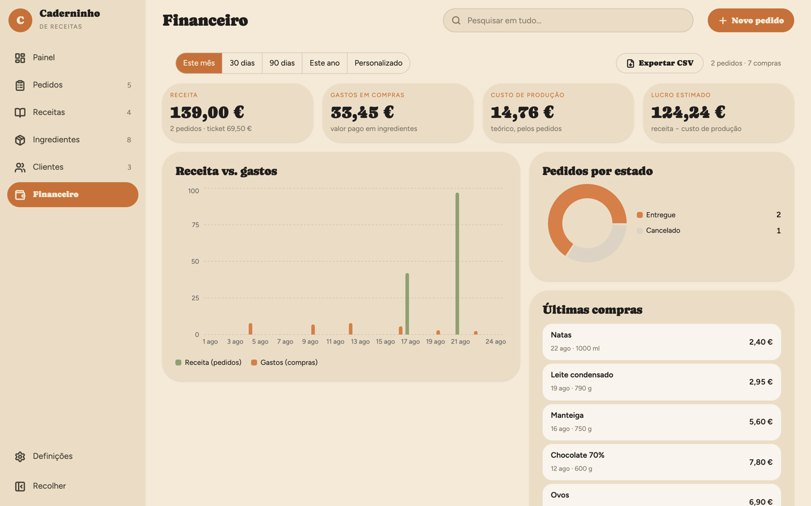

Da embalagem ao custo de cada unidade
- Registe os ingredientes. Indique o preço e a quantidade da embalagem que comprou.
- Monte a receita. Escolha os ingredientes e indique a quantidade usada de cada um, na unidade registada.
- Indique quanto rende. A app soma o custo dos ingredientes e calcula o custo por unidade de rendimento.
Por exemplo: uma receita de 20 salgados
Se os ingredientes usados custam 12 € e a receita rende 20 salgados, cada salgado tem um custo de ingredientes de 0,60 €.
Exemplo ilustrativo. Este é o custo dos ingredientes: antes de definir o preço de venda, considere também embalagens de venda, o seu tempo, energia e outras despesas. A app ainda não calcula essas parcelas separadamente.
Depois do cálculo, organize o dia a dia
Fichas técnicas
Guarde as quantidades de cada ingrediente e o rendimento. Consulte o custo dos ingredientes da receita e de cada unidade.
Inventário esperto
Stock por ingrediente, alertas de falta e leitura de faturas com IA para registar compras.
Pedidos e entregas
Organize encomendas, acompanhe as datas de entrega e exporte um resumo em PDF para o cliente.
Financeiro claro
Consulte os valores de venda e as compras registadas, com gráficos e exportação CSV.
Saiba quanto custa cada dose
A ficha técnica soma o custo das quantidades usadas e divide-o pelo rendimento. Quando atualiza o preço de um ingrediente, o cálculo das receitas acompanha essa alteração.

Stock sem surpresas
Registe as compras manualmente ou use a leitura opcional de faturas com IA. Reveja os produtos, as quantidades e os preços antes de confirmar.
Encomendas e entregas organizadas
Registe o que o cliente encomendou, o preço e a data de entrega. Acompanhe o estado do pedido e exporte o resumo em PDF.

O mês num relance
Acompanhe vendas e compras registadas, com gráfico diário e exportação CSV. As estimativas de custo usam os preços atuais dos ingredientes e não incluem as restantes despesas do negócio.

Os seus dados são seus. Literalmente.
As receitas e os registos ficam guardados no seu computador, sem precisar de criar conta. Pode exportar cópias de segurança. A leitura opcional de faturas envia a imagem ao Google Gemini; a pesquisa de produtos envia o código de barras ao Open Food Facts. Saiba como são tratados os seus dados.